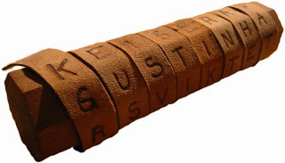

Awal mula adanya Kriptografi
Melihat dari hasil penemuan-penemuan, sejarah penulisan rahasia tertua dapat ditemukan pada peradaban Mesir kuno, yakni tahun 3000 SM. Bangsa Mesir menggunakan ukiran rahasia yang disebut dengan hieroglyphics untuk menyampaikan pesan kepada orang-orang yang berhak
Awal tahun 400 SM bangsa Spartan di Yunani memanfaatkan kriptografi di bidang militer dengan menggunakan alat yang disebut scytale, yakni pita panjang berbahan daun papyrus yang dibaca dengan cara digulungkan ke sebatang silinder. Sedangkan peradaban Cina dan Jepang menemukan kriptografi pada abad 15 M
Peradaban Islam juga menemukan kriptografi karena penguasaannya terhadap matematika, statistik, dan linguistik. Bahkan teknik kriptanalisis dipaparkan untuk pertama kalinya pada abad 9 M oleh seorang ilmuwan bernama Abu Yusuf Ya’qub ibn ‘Ishaq as-Shabbah al Kindi atau dikenal dengan Al-Kindi yang menulis kitab tentang seni memecahkan kode. Kitabnya berjudul Risalah fi Istikhraj al-Mu’amma (Manuskrip untuk memecahkan pesan-pesan Kriptografi). Terinspirasi dari perulangan huruf dalam Al-Qur’an, Al-Kindi menemukan teknik analisis frekuensi, yakni teknik untuk memecahkan ciphertext berdasarkan frekuensi kemunculan karakter pada sebuah pesan

Pentingnya Kriptografi
berperan penting di dalam bidang keamanan informasi. Kriptografi digunakan untuk menjaga keamanan pesan atau informasi, baik informasi yang ditransmisikan melalui saluran komunikasi maupun informasi disimpan di dalam media penyimpanan.
Elemen dan istilah-istilah yang ada pada Kriptografi

Plain Text adalah text yang dapat dibaca, sedangkan teknik untuk membuat data tidak dapat dibaca disebut Enkripsi. Data yang telah dienkripsi disebut Chipertext dan teknik untuk mengembalikan Chipertext menjadi bentuk Plaintext adalah Dekripsi
CRYPTOSYSTEM
Cryptographic system atau cryptosystem adalah suatu fasilitas untuk mengkonversikan plaintext ke ciphertext dan sebaliknya. Dalam sistem ini, seperangkat parameter yang menentukan oleh satu atau beberapa kunci kriptografi. transformasi pencipheran tertentu disebut suatu set kunci. Proses enkripsi dan dekripsi diatur
Kriptografi dapat memenuhi kebutuhan umum suatu transaksi:
1. Kerahasiaan (confidentiality) dijamin dengan melakukan enkripsi (penyandian).
2. Keutuhan (integrity) atas data-data pembayaran dilakukan dengan fungsi hash satu arah.
3. Jaminan atas identitas dan keabsahan (authenticity) pihak-pihak yang melakukan transaksi dilakukan dengan menggunakan password atau sertifikat digital. Sedangkan keotentikan data transaksi dapat dilakukan
dengan tanda tangan digital.
4. Transaksi dapat dijadikan barang bukti yang tidak bisa disangkal (non- repudiation) dengan memanfaatkan tanda tangan digital dan sertifikat digital.
Karakteristik cryptosytem yang baik
1. Keamanan sistem terletak pada kerahasiaan kunci dan bukan pada kerahasiaan algoritma yang digunakan.
2. Cryptosystem yang baik memiliki ruang kunci (keyspace) yang besar.
3. Cryptosystem yang baik akan menghasilkan ciphertext yang terlihat acak dalam seluruh tes statistik yang dilakukan terhadapnya.
4. Cryptosystem yang baik mampu menahan seluruh serangan yang telah dikenal sebelumnya
Teknik Dasar Kriptografi
Subtitusi
Salah satu contoh teknik ini adalah Caesar cipher yang telah dicontohkan diatas. Langkah pertama adalah membuat suatu tabel substitusi. Tabel substitusi dapat dibuat sesuka hati, dengan catatan bahwa penerima pesan memiliki tabel yang sama untuk keperluan dekripsi. Bila tabel substitusi dibuat secara acak, akan semakin sulit pemecahan ciphertext oleh orang yang tidak berhak.

Tabel substitusi diatas dibuat secara acak. Dengan menggunakan tabel tersebut, dari plaintext "5 teknik dasar kriptografi" dihasilkan ciphertext "L 7Q6DP6 KBVBM 6MPX72AMBGP". Dengan menggunakan tabel substitusi yang sama secara dengan arah yang terbalik (reverse), plaintext dapat diperoleh kembali dari ciphertext-nya.
Blocking
Sistem enkripsi terkadang membagi plaintext menjadi blok-blok yang terdiri dari beberapa karakter yang kemudian dienkripsikan secara independen. Plaintext yang dienkripsikan dengan menggunakan teknik blocking adalah :

Dengan menggunakan enkripsi blocking dipilih jumlah lajur dan kolom untuk penulisan pesan. Jumlah lajur atau kolom menjadi kunci bagi kriptografi dengan teknik ini. Plaintext dituliskan secara vertikal ke bawah berurutan pada lajur, dan dilanjutkan pada kolom berikutnya sampai seluruhnya tertulis. Ciphertext-nya adalah hasil pembacaan plaintext secara horizontal berurutan sesuai dengan blok-nya. Jadi ciphertext yang dihasilkan dengan teknik ini adalah "5K G KRTDRAEAIFKSPINAT IRO". Plaintext dapat pula ditulis secara horizontal dan ciphertextnya adalah hasil pembacaan secara vertikal.
Permutasi
Salah satu teknik enkripsi yang terpenting adalah permutasi atau sering juga disebut transposisi. Teknik ini memindahkan atau merotasikan karakter dengan aturan tertentu. Prinsipnya adalah berlawanan dengan teknik substitusi. Dalam teknik substitusi, karakter berada pada posisi yang tetap tapi identitasnya yang diacak. Pada teknik permutasi, identitas karakternya tetap, namun posisinya yang diacak. Sebelum dilakukan permutasi, umumnya plaintext terlebih dahulu dibagi menjadi blok-blok dengan panjang yang sama. Untuk contoh diatas, plaintext akan dibagi menjadi blok-blok yang terdiri dari 6 karakter, dengan aturan permutasi sebagai berikut :

Dengan menggunakan aturan diatas, maka proses enkripsi dengan permutasi dari plaintext adalah sebagai berikut :

Ciphertext yang dihasilkan dengan teknik permutasi ini adalah "N ETK5 SKD AIIRK RAATGORP FI".
Ekspansi
Suatu metode sederhana untuk mengacak pesan adalah dengan memelarkan pesan itu dengan aturan tertentu. Salah satu contoh penggunaan teknik ini adalah dengan meletakkan huruf konsonan atau bilangan ganjil yang menjadi awal dari suatu kata di akhir kata itu dan menambahkan akhiran "an". Bila suatu kata dimulai dengan huruf vokal atau bilangan genap, ditambahkan akhiran "i". Proses enkripsi dengan cara ekspansi terhadap plaintext terjadi sebagai berikut :

Ciphertextnya adalah "5AN EKNIKTAN ASARDAN RIPTOGRAFIKAN". Aturan ekspansi dapat dibuat lebih kompleks. Terkadang teknik ekspansi digabungkan dengan teknik lainnya, karena teknik ini bila berdiri sendiri terlalu mudah untuk dipecahkan.
Compaction
Mengurangi panjang pesan atau jumlah bloknya adalah cara lain untuk menyembunyikan isi pesan. Contoh sederhana ini menggunakan cara menghilangkan setiap karakter ke-tiga secara berurutan. Karakter-karakter yang dihilangkan disatukan kembali dan disusulkan sebagai "lampiran" dari pesan utama, dengan diawali oleh suatu karakter khusus, dalam contoh ini digunakan "&". Proses yang terjadi untuk plaintext kita adalah :

Aturan penghilangan karakter dan karakter khusus yang berfungsi sebagai pemisah menjadi dasar untuk proses dekripsi ciphertext menjadi plaintext kembali.
Dengan menggunakan kelima teknik dasar kriptografi diatas, dapat diciptakan kombinasi teknik kriptografi yang amat banyak, dengan faktor yang membatasi semata-mata hanyalah kreativitas dan imajinasi kita. Walaupun sekilas terlihat sederhana, kombinasi teknik dasar kriptografi dapat menghasilkan teknik kriptografi turunan yang cukup kompleks, dan beberapa teknik dasar kriptografi masih digunakan dalam teknik kriptografi modern.